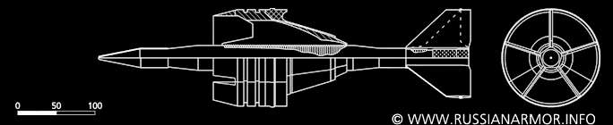

<-返回上一级
3BM32是苏维埃所服役过的最强大的一种穿甲弹。服役于1985年。
这是苏联的第一种整体弹芯穿甲弹，作为贫铀弹，3bm32在制造工艺上会比WHA的更加简单。
| 初速度 | 1700MPS |
| 重量（弹体） | 4.85KG |
| 重量（全弹） | 7.05KG |
| 全长 | ~480MM |
| 穿甲体长 | ~380MM |
| L/D（穿甲体/弹径） | 13:1 |
| 2000m 上穿深 | 250RHA/60deg , ~500RHA |
Developed under the research topic "Vant", the 3BM32 is a further refinement of the 3BM29 round, featuring an improved version of the re-designed aluminum sabot introduced with the 3BM29 and a slimmer depleted uranium/nickle-zinc monoblock penetrator. Despite its lower muzzle velocity and shorter overall length compared to its predecessor, the 3BM32 is both heaver and has a better length to diameter ratio, resulting in an roughly 15% increase in performance over the 3BM29. Introduced in 1985, the 3BM32 was produced in large numbers and, along with the 3BM42, served as the principal anti-armor round for the Soviet Union through the end of the Cold War. This round saw action in both the Chechen and Georgian conflicts, and saw extensive use on both sides of the so-called "War in Donbass". Never exported, as of this writing (2019) it can be assumed that Russian stocks of 3BM32 rounds have been significantly reduced while Ukranian stockpiles may be completely depleted. (来自Steel Beasts WIKI.)
一些引用来源（可能不全）：
kotsch 一位b站的大佬 中棒大仙的帖子